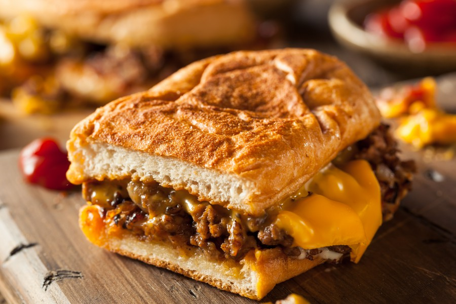

漢堡王跑，就因為他們天天吃漢堡，因此對漢堡的選擇也是很挑剔講究的。
雖然選擇眾多，但真正好吃的漢堡除了麵包體烤的酥脆。
漢堡牛肉更是紮實有香氣。
加搭配爆漿的起司內餡，令人垂延三尺。
來到紐約千萬不能錯過。

(首頁)紐約必吃美食介紹 牛排介紹 龍蝦介紹 熱狗介紹
練習用音樂、影片
Your browser does not support the audio element. Your browser does not support the video tag.